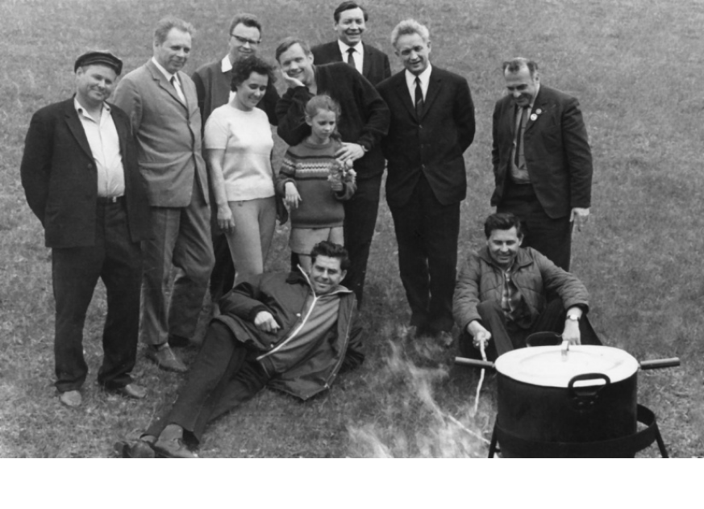
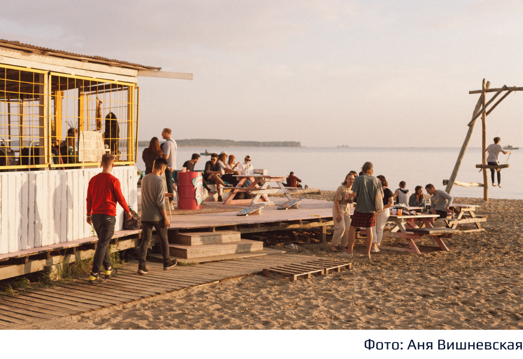

В 2021-м году они планируют провести уборку острова, когда в Бердске улучшится эпидемиологическая обстановка.
У острова есть пример удачного благоустройства прибрежной территории: это группа активистов «Академпляж».
Обское море
Академика Лаврентьева, 10/2к7
Обское водохранилище образовалось после строительства новосибирской гидроэлектростанции в 1957 году. ГЭС стал частью энергосистемы Сибири, а «море» — местом отдыха и пикников. Внутри разлива Оби возникли острова, которые стали называть Кленовый и Тань-вань. Первый получил имя из-за растущих там клёнов, второй — из-за популярности среди влюбленных пар.
После постройки ГЭС волны размывали прибрежье у железной дороги вместе с бетонными укреплениями. «Это будет любимое место отдыха трудящихся», — этими словами через год куратор строительства Академгородка убедил новосибирский исполком организовать песчаный пляж у водохранилища.
«Полоса уже намытого песка протянулась километра на два влево и на километр вправо. Потом справа она поворачивала под 90 градусов, и был отчетливо виден высокий берег, покрытый соснами, спускающийся к воде и окаймленный золотым песком», - пишет в мемуарах ученый Михаил Качан. На Центральном пляже в 1970 году первый человек на Луне Нил Армстронг и председатель СО РАН Михаил Лаврентьев с советскими космонавтами сварили уху, а потом съездили на пикник на Тань-вань.
В 2020-м необитаемые острова до сих пор пользуются популярностью: зимой до него добираются пешком по льду, а летом — вплавь на лодке. Остров Кленовый, который сейчас называют «Хреновый» из-за поросли хрена в земле, сегодня загрязнен и замусорен.
Владельцы одного из бердских санаториев устроили на территории базу отдыха и после конца их деятельности открестились от острова.
В 2021-м году они планируют провести уборку острова, когда в Бердске улучшится эпидемиологическая обстановка.
У острова есть пример удачного благоустройства прибрежной территории: это группа активистов «Академпляж».
У инстаграма проекта уже 5,9 тысяч подписчиков. «Академпляж» разработал стилистику совместно с фотографом и видеографом Глебом Никифоровым. Их вдохновляет американский стиль 90-ых. Через соцсети группа показывает, что пляж в Академгородке может быть как в Калифорнии.
Летом 2019-ого несколько человек начали прибираться на Центральном пляже Академгородка и заметили, что он находится в запустении. Кроме замусоренности, не было комфортного туалета: у кафе стояли тесные кабинки. Ещё один, старый, находился у дороги вдоль берега. Это кирпичное здание с двумя входами без дверей.
Активисты загорелись идеей преобразования пляжа и запустили краудфандинговую кампанию. За месяц инициативная группа собрала на свою идею 644 тысячи. Этого хватило на организацию санузла, в котором будут туалеты, душевые и комната матери и ребенка.
Обустроена беседка, у входа которой деревянный пол перекрасили в розовый. Теперь на его фоне фотографируются гости пляжа. Активисты также сделали кабинки для переодевания из ДСП и украсили стрит-артом старый туалет.
Новый туалет будет готов к работе летом 2021 года. Санузел соорудят внутри сухогрузного контейнера. По дизайну проекта, который организаторы выложили в сеть, снаружи туалета волонтеры поставят баки для раздельного сбора мусора. Зимой 2020-2021 года активисты залили каток на месте пляжа.
Авторы: Артем Васильев, Алина
Гурицкая, Сергей
Боцманов,
Сергей Лемеш, Вячеслав Снегур, студенты 4 курса ФЖ НГУ
Кураторы: Беленко Виктория Евгеньевна, заведующая Кафедрой массовых коммуникаций ГИ НГУ, Шафферт Евгения
Александровна, ассистент Кафедры массовых коммуникаций ГИ НГУ.
Проект "Academic Trails" реализован в рамках программы "Пространство соучастия", 2021